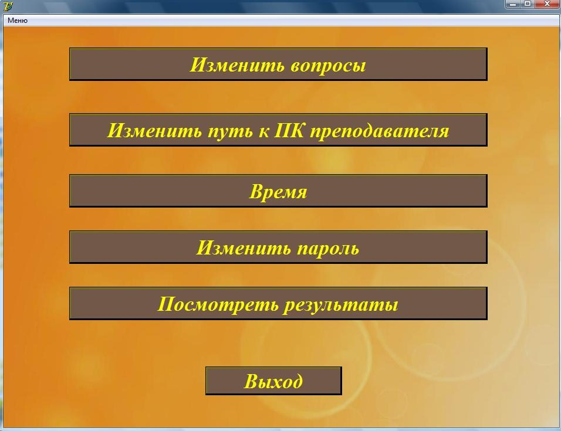
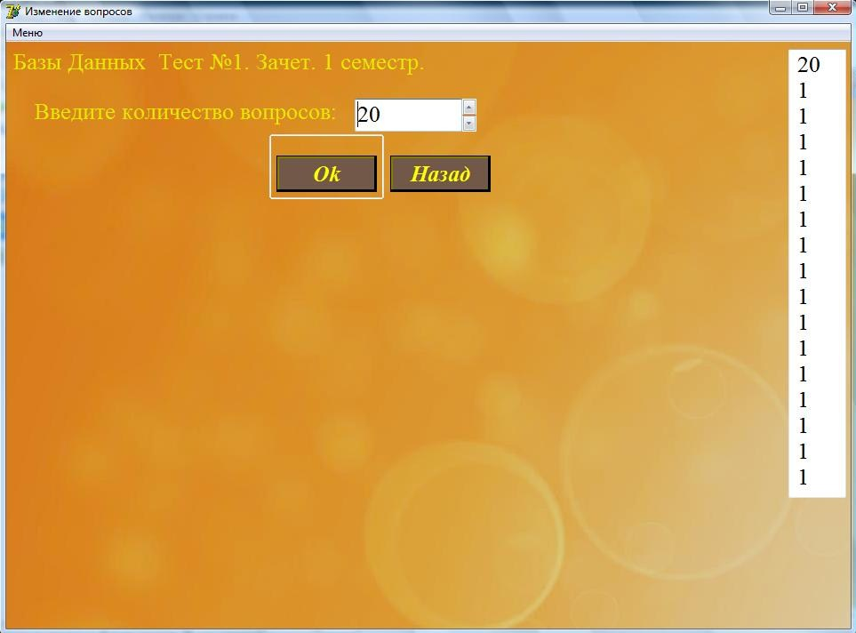
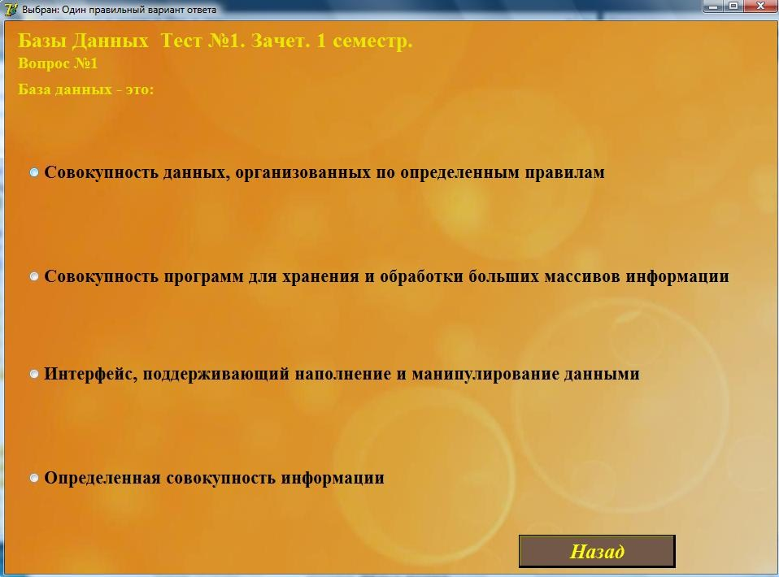
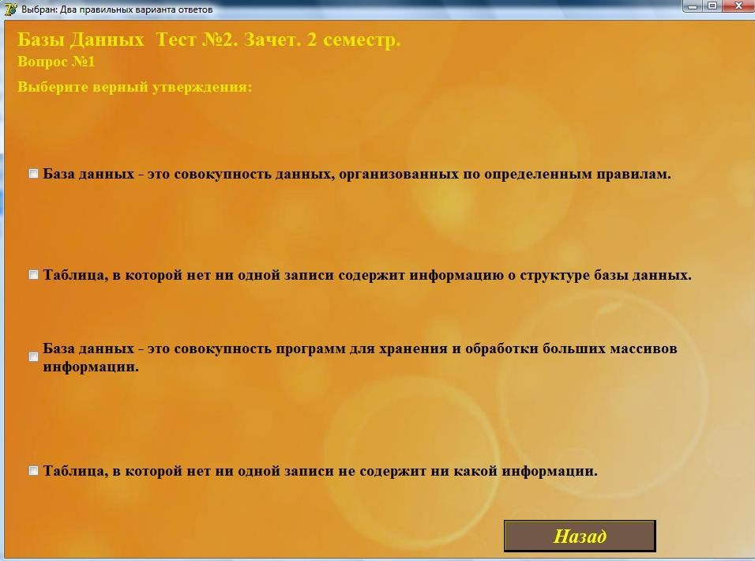
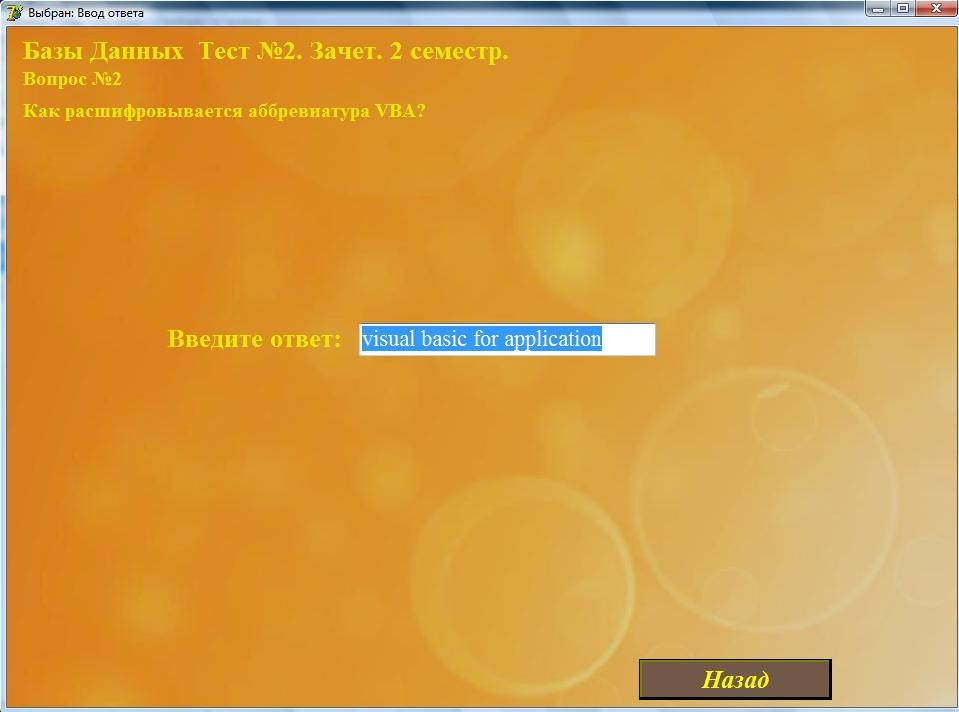

Функции преподавателя.
В данной программе преподаватель может:
- Изменять, удалять и добавлять вопросы.
- Добавлять, переименовывать и удалять темы.
- Менять пароль.
- Менять путь, на который отправляются результаты.
- Устанавливать время, отведенное на проведение тестирования.
Чтобы получить доступ к этим возможностям, преподаватель должен запустить файл "Prep.exe".
Главная форма выглядит следующим образом:

1. Рассмотрим первую кнопку "Изменить вопросы".
После нажатия на эту кнопку мы переходим на форму где преподавателю предоставляется возможность выбрать тему для которой требуется изменить вопросы.

Так же на этой форме можно удалить, добавить или переименовать дисциплины и темы. Если преподавателю требуется выполнить одно из этих действий, то следует нажать кнопку "Редактировать", после чего нужно выбрать что требуется изменить, нажав кнопку "Темы" или "Дисциплины".
Для изменения дисциплин нужно просто вписать новую дисциплину в текстовое поле, изменить название уже существующих или удалить дисциплину из списка.
Для изменения тем необходимо сначала выбрать дисциплину, для которой будут изменяться темы и, так же как и с дисциплинами удалить, добавить, или изменить название в текстовом поле.

Для изменения вопросов необходимо выбрать нужную дисциплину, тему и нажать "Далее". После чего появится форма для изменения вопросов, для начала нужно выбрать количество вопросов, которые будут в тесте по этой теме, вопросов не может быть меньше 5 и больше 500.

В правом краю формы имеется поле, в котором указано количество и типы вопросов в тесте, это сделано для удобства преподавателя, если преподаватель создает тест, а не редактирует уже существующий, то это поле будет пустым и будет заполняться по ходу создания теста.
После того как выбрали количество вопросов и нажали "Ок", появляется раскрывающийся список в котором указаны типы вопросов для теста, выбрав понравившийся нажимаем "Ок" и начинаем заполнять вопрос. При заполнение вопроса необходимо помнить, что в конце каждой строки в вопросе необходимо нажать клавишу "Enter"!
Заполнение вопросов.
Для каждого типа вопроса существуют определенные правила заполнения, всего в программе существует 4 типа тестов:I Один правильный вариант ответа.
- Первая, вторая и третья строки служат для хранения вопроса, то есть если вопрос меньше чем три строки, например одну, то вторую и третью строки следует оставить пустыми.
- В 4,5,6 строки вводится первый вариант ответа, так же как и в вопросе если вариант ответа содержит меньше трех строк, то незаполненные следует оставить пустыми, но ни в коем случае не удалять их полностью.
- В 7,8,9 вводится второй вариант ответа.
- В 10,11,12 вводится третий вариант ответа
- В 13, 14, 15 вводится четвертый вариант ответа
- в 16 строку вводится, какой из вариантов является правильным, в этой строке должна быть цифра 1,2, 3 или 4 и больше ни каких символов или знаков.
II Два правильных варианта ответа
- Первая, вторая и третья строки служат для хранения вопроса.
- В 4,5,6 строки вводится первый вариант ответа.
- В 7,8,9 вводится второй вариант ответа.
- В 10,11,12 вводится третий вариант ответа
- в 13,14,15 вводится четвертый вариант ответа
- В 16 строку вводятся, какие из вариантов ответа правильные, не более двух.
III Ввод ответа.
- Первая, вторая и третья строки служат для хранения вопроса.
- Четвертая строка служит для ввода ответа, ответ необходимо вводить с маленькой буквы и без посторонних символов, так как чтобы студенту засчитался балл, он должен ввести ответ точно так же, как его вводил преподаватель при составлении вопроса.
IV Соответствия.
- Первая, вторая и третья строки служат для хранения вопроса.
- В 4 строку вводится название первой группы соответствий (1-3).
- В 5,6,7 вводится первое соответствие первой группы.
- В 8,9,10 второе.
- В 11,12,13 третье.
- В 14 строку вводится название второй группы соответствий (а-в).
- В 15,16,17 вводится первое соответствие второй группы.
- В 18,19,20 второе.
- В 21,22,23 третье.
- Далее следует открыть раскрывающийся список и посмотреть какая цифра соответствует нужному вам соответствию (всего их 6) и указать ее в 24 строке.

Данный тип вопроса заполняется следующим образом:

Данный тип вопроса заполняется следующим образом:
Данный тип вопроса заполняется следующим образом:
Для того чтобы быть уверенным все ли введено верно, можно посмотреть как будет выглядеть вопрос, нажав кнопку "Просмотр".
2.Рассмотрим вторую кнопку "Изменить путь к ПК преподавателя".
Эта кнопка позволяет изменить путь к компьютеру, на который будут отправляться результаты тестирования, для этого необходимо полностью ввести путь и нажать "Подтвердить". ***На конце пути обязательно должен быть символ "\".***
3. Теперь рассмотрим кнопку "Время".
Эта кнопка позволяет изменить время, отведенное на тестирование. При настройке времени необходимо ввести количество секунд и минут и нажать "Подтвердить", заданное вами время будет сохраняться и после выхода из программы, пока вы его вновь не измените.4.Рассмотрим кнопку "Изменить пароль".